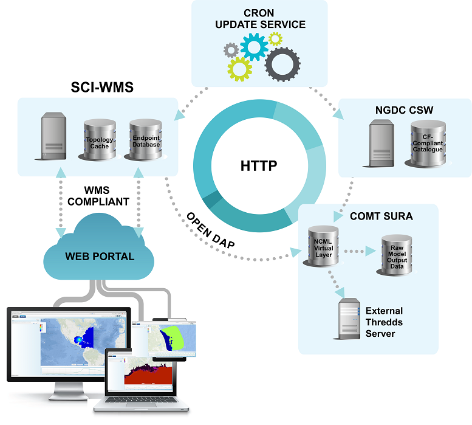

Python Web Mapping Service (WMS) for visualizing geospatial data
Introduction
- SCI-WMS is an open-source Python implementation of the (Web Mapping Service) API for oceanographic, atmospheric, climate and weather data.
- Achieves real-time, on-demand visualization of externally hosted CF-compliant data.
- Can visualize structured or unstructured grids adhering to CF and/or CF-UGRID conventions.
- Abstracts each dataset into two objects: a topology and corresponding model data.
- Topologies are stored locally for quick and efficient spatial queries.
- Model data is hosted externally, subsetted data is downloaded and rendered per request.
- Supports arbitrary cartographic projections.
Architecture Overview (COMT deployment)

- Grid topologies are cached using R-Tree structures for spatial access methods
- Web-based WMS client demo displaying all datasets and available WMS layers
- Secure administrator interface for dataset management